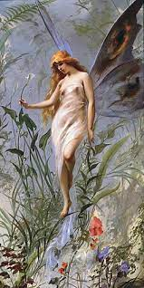
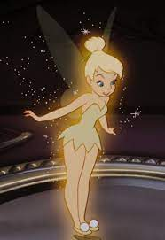

Keijut ovat satuolentoja, joilla on siivet.
Siivet ovat ohuet, hauraat ja voivat olla melkein läpinäkyvät. Siipien koko vaihtelee, mutta ne ovat useimmiten pienet.
Siivet voivat muistuttaa perhosen tai sudenkorennon siipiä, mutta fantasia maailmoissa tämä voi vaihdella suuresti.
Keijut ovat useimmiten kauniita naispuolisia olentoja, jotka tekevät taikoja.
Ne ovat erittäin pienikokoisia, usein jopa huomaamattomia tai aineettomia.
Todennäköisesti tunnetuin keiju on J. M. Barrierin luoma Peter Panista tuttu Helinä-keiju.
Helinä-keiju on pata- ja kattilakeiju, ja asuu teepannun muotoisessa talossa Mikä-Mikä-Maan Kimmellyslaaksossa.
Hän on muiden keijujen mukaan temperamenttinen, peloton sekä hauskanpitoa rakastava. Toisaalta hän on helposti loukkaantuva, mutta nopea pyytämään anteeksi.
Helinä-keiju on esiintynyt mm.